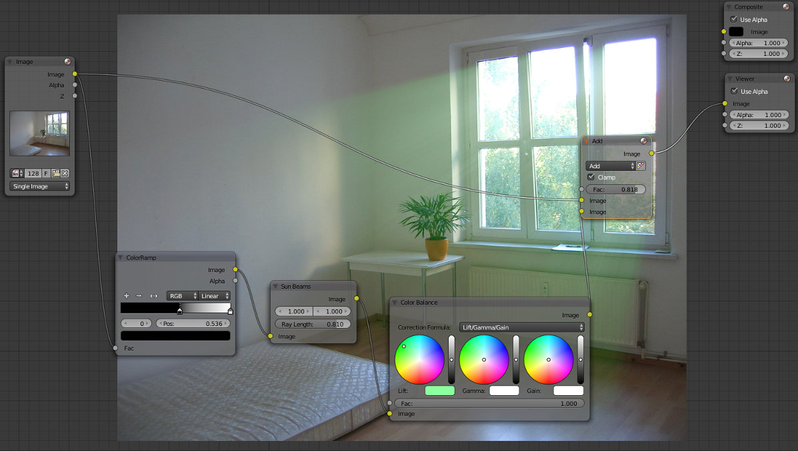
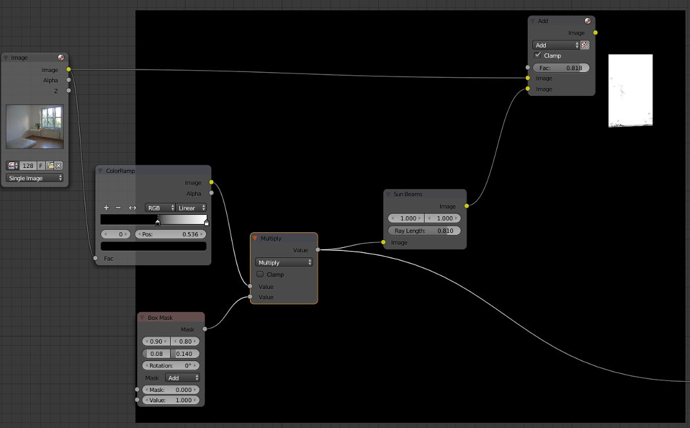
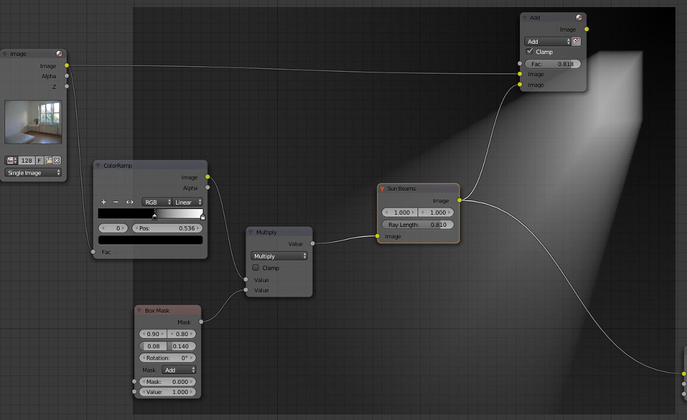
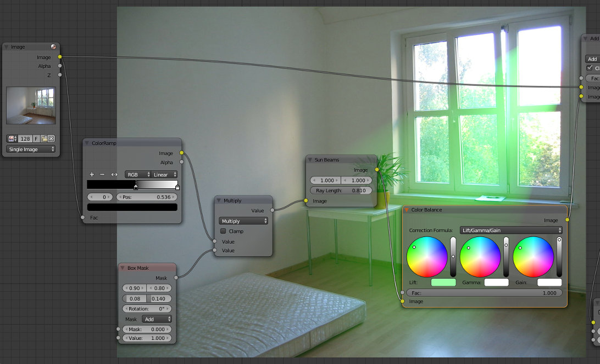

O nó Sun Beams permite adicionar raios de luz similares ao God Rays em pós-produção. Utilizar este processo é bastante mais rápido do que utilizar iluminação volumétrica.
Nos exercícios abaixo iremos utilizar a fotografia Zimmer de Bleekman, disponível na Wikipedia.
O primeiro passo é definir a área de onde os Sun Beams são lançado. O nó ColorRamp (Converter) permite limitar a área de onde vêm os raios (zona mais clara da imagem) aumentando o contraste.
O nó Sun Beams (Filter) cria os raios. Podemos configurar a sua origem e comprimento dos raios. Pode colocar a origem fora da imagem visível, por exemplo.
O nó Add (Color > Mix) adiciona os Sun Beams à imagem. É a forma mais correta de adicionar o efeito. O Fac permite controlar a quantidade que se pretende adicionar.
Na imagem abaixo, foi ainda utilizado Color Balance (Color) para manipular a cor dos raios.
Atenção: quando pretende utilizar o nó Sun Beams numa imagem já existente, é importante inserir as dimensões/resolução da imagem na resolução do render. A configuração do Sun Beams (width, height e ray length) depende da resolução.
No exemplo abaixo, utilizámos uma Box Mask (Matte) para limitar a área de origem dos raios ao vidro mais à direita, fila de cima. Com a Box Mask foi criada e posicionada uma caixa que limita a área. o nó Multiply (Converter > Math ! Atenção: não confundir com Multiply do Color > Mix) permite utilizar a máscara na imagem.
É visível que os raios só estão a surgir da área definida.
Foi adicionado Color Balance (Color) para tornar mais visível o efeito.
